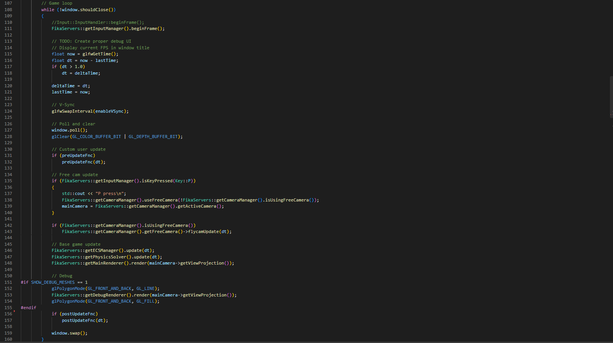
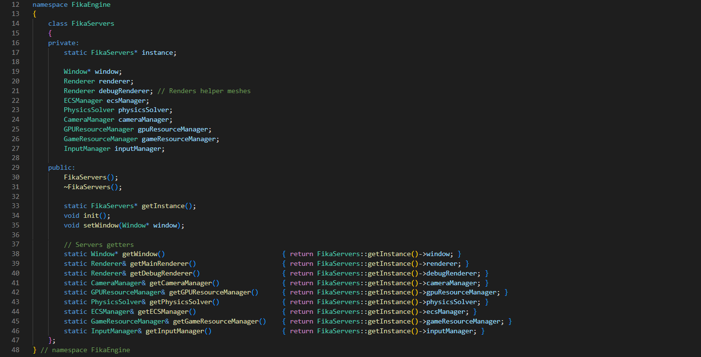
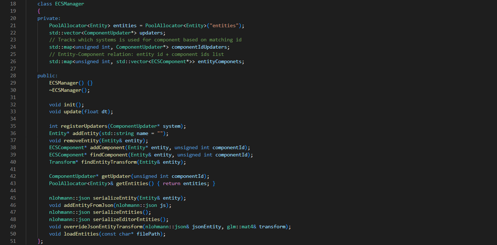
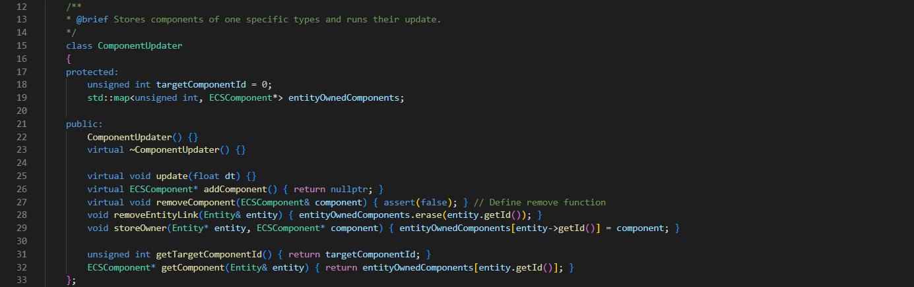
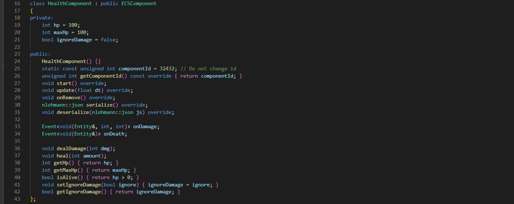
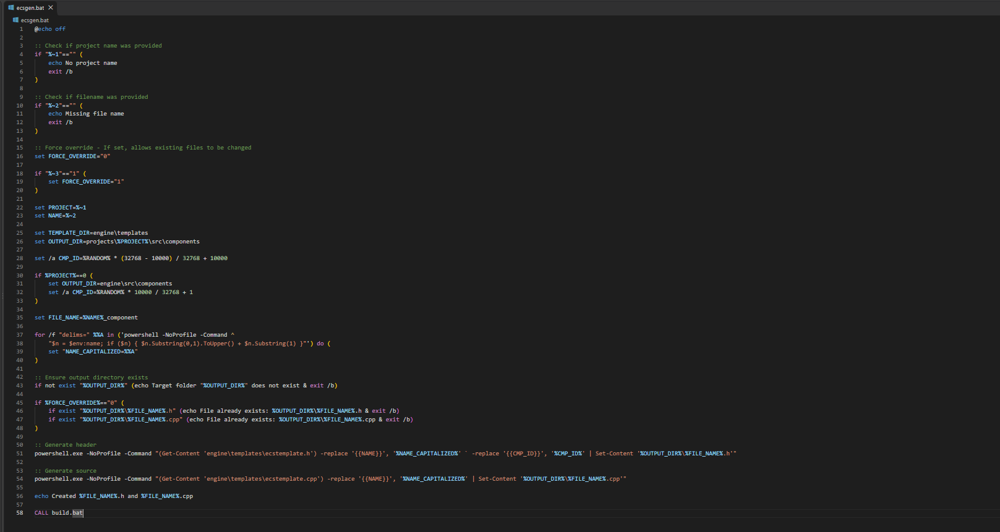

Fika Engine
 GitHub
GitHub YouTube
YouTube2026/4 - now
Fika Engine is a C++ experimental game engine developed for study of various game engine features. The goal is to create a minimal generic engine within the scope of a single person, or small team, which would be suitable and efficient for small games.
Features
- Game loop & ECS based entity management
- Pool allocator & basic memory management tools
- Collision detection for Spheres, AABB, Capsules and Lines
- Mouse-Keyboard & Gamepad input handling
- Basic OpenGL rendering
- Basic level editor
Systems
- ECS: ECS Folder
- Physics: Physics Folder
- Memory Management: Pool Allocator
- Camera: Camera Folder
- Game Resources: Header & Source
- Level Editor: Editor Folder
- Rendering: Renderer Folder
- Input Manager: Input Folder
Core Structure
The engine is unified under a single header called fika_engine.h. This header provides access points to all engine features and contains class Game, which takes care of running a game loop.

Fika Engine Base: fika_engine.h & fika_engine.cpp
Every system is stored inside singleton class FikaServers. In this class users can access global systems like entity manager, renderer, physics and so on.

Fika Engine Servers: fika_servers.h
ECS Support
Most Fika base systems follow an ECS architecture. On top of that, users can also use ECS for custom components.
Fika ECS is composed of classes ECSManager, Entity, Component, ComponentUpdater. ECSManager stores all registered updators and runs them in the game loop. Updater holds a pool of same type components and runs updates on active components. Components, contrary to ECS standards, take care of both data and logic, but this is a personal preference rather than an enforced rule. Entities and components are tied together via ECSManager, which also serves as a place for adding entities and components to an entity.


This system was done better to tight together components of the same type and be able to link them to unique component id. This allows the engine to save and recreate entities with specific components, which is for example used when loading levels defined inside the editor.

Fika ECS Classes: ECS Folder
This unfortunately introduces a more extensive boiler plate for new components. To improve this, there is bash script for creating a component and updater class base. Into this base user only needs to fill data and logic and then call updater init to make components part of ECSManager.

ECS Generator: Bash & Template
Planned Features
- Vulkan based rendering
- Playing and using audio files
- Rework editor code and its UI/UX
- Level files without redundant data and binary format option
- Asynchronous data loading
- Component variable editable inside editor
- Levels manager
- Input mapping
- Creating game project in arbitrary location